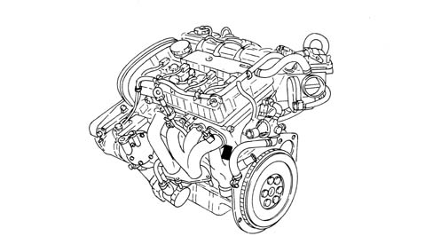
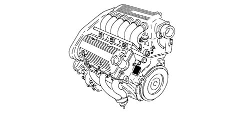
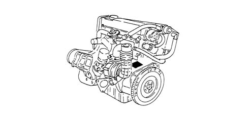

Position of engine marking - from 11/02
- Path
- Technical Data > General information > IDENTIFICATION PLATES > Position of engine marking - from 11/02
- Kind
- technical data / specifications
- Applies to
- all engines; all production periods
- Interactive page
- https://sloeber94.github.io/elrnDB-a147/en/#/3022795
Applies to: all engines; all production periods
T.SPARK Engines
The engine marking is stamped on the crankcase, gearbox side, near the exhaust manifold.

3.2 V6 Engine
The engine marking is stamped on the crankcase, gearbox side, near the exhaust manifold.

1.9 JTD 16V Engine
The engine marking is stamped on the crankcase, gearbox side, near the exhaust manifold.

1.9 JTD 16V Engine
The engine marking is stamped on the crankcase, gearbox side, near the exhaust manifold.